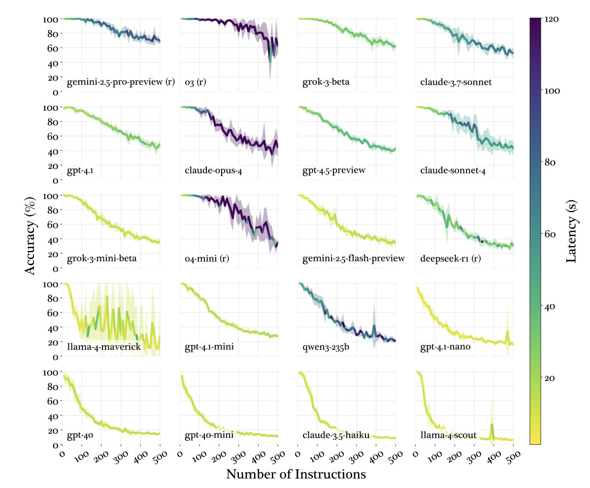
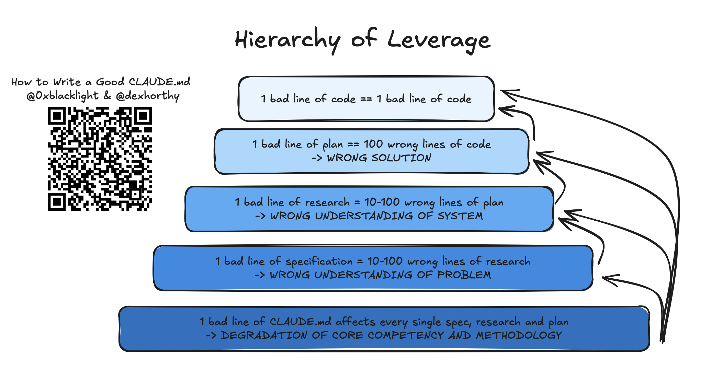

总结
这篇文章讲的是：CLAUDE.md 不是长期记忆，而是每次会话重新 onboarding 的简报。
- 每个会话开始时，coding agent 对你的代码库一无所知。
- CLAUDE.md 应该覆盖 WHAT / WHY / HOW：技术栈、项目布局、怎么运行和验证。
- Claude 经常忽略 CLAUDE.md，因为系统提醒告诉它“只在高度相关时使用”。
- 指令不是越多越好：前沿 thinking 模型能稳定遵循约 150–200 条指令，而 Claude Code 的 system prompt 已占约 50 条。
- 建议少于 300 行，越短越好；HumanLayer 的根文件不到 60 行。
- 用 progressive disclosure：CLAUDE.md 只放指针，任务特定内容放独立文件。
- Claude 不是 linter，格式问题交给确定性工具。
- 不要自动生成 CLAUDE.md，它影响每个阶段，值得逐行手写。
原文逐段对照翻译
翻译说明：以下按原文顺序逐段翻译，保留全部论证、数字和建议；中文以自然、准确为目标。
LLM 是无状态的
LLMs are stateless functions. Their weights are frozen by the time they're used for inference, so they don't learn over time. The only thing that the model knows about your codebase is the tokens you put into it.
LLM 是无状态函数。权重在推理时已经冻结，不会随着使用而学习。模型对你代码库的全部了解，就是你放进上下文的那些 token。
Similarly, coding agent harnesses such as Claude Code usually require you to manage agents' memory explicitly. CLAUDE.md (or AGENTS.md) is the only file that by default goes into every single conversation you have with the agent.
同样，Claude Code 这类 coding agent harness 通常要求你显式管理 agent 的记忆。CLAUDE.md（或 AGENTS.md）是默认进入每一次对话的文件。
This has three important implications: coding agents know absolutely nothing about your codebase at the beginning of each session; the agent must be told anything that's important to know about your codebase each time you start a session; and CLAUDE.md is the preferred way of doing this.
这带来三个重要推论：每个会话开始时，agent 对你的代码库一无所知；每次开始会话，都必须告诉它重要信息；CLAUDE.md 是首选方式。
CLAUDE.md 是 onboarding
Since Claude doesn't know anything about your codebase at the beginning of each session, you should use CLAUDE.md to onboard Claude into your codebase. At a high level, this means it should cover WHAT, WHY, and HOW.
既然 Claude 在每个会话开始时对代码库一无所知，就应该用 CLAUDE.md 帮它完成 onboarding。概括来说，它要覆盖 WHAT、WHY、HOW。
WHAT: tell Claude about the tech, your stack, the project structure. Give Claude a map of the codebase. This is especially important in monorepos. WHY: tell Claude the purpose of the project and what everything is doing in the repository. HOW: tell Claude how it should work on the project, how to verify changes, run tests, typechecks, and compilation steps.
WHAT：告诉 Claude 技术栈、项目结构，给它一张代码库地图，monorepo 尤其重要。WHY：说明项目目的，以及仓库里各部分在做什么。HOW：告诉它怎么工作、怎么验证改动、怎么跑测试、类型检查和编译。
But the way you do this is important. Don't try to stuff every command Claude could possibly need to run in your CLAUDE.md file—you will get sub-optimal results.
但方式很重要：不要把 Claude 可能需要的每个命令都塞进去，否则结果会次优。
Claude 经常忽略 CLAUDE.md
Regardless of which model you're using, you may notice that Claude frequently ignores your CLAUDE.md file's contents. You can investigate this yourself by putting a logging proxy between the Claude Code CLI and the Anthropic API.
不管你用哪个模型，都可能发现 Claude 经常忽略 CLAUDE.md。可以在 Claude Code CLI 和 Anthropic API 之间放一个 logging proxy 来验证。
Claude Code injects a system reminder with your CLAUDE.md file in the user message: "IMPORTANT: this context may or may not be relevant to your tasks. You should not respond to this context unless it is highly relevant to your task."
Claude Code 会把 CLAUDE.md 和一段系统提醒一起注入用户消息：“重要：这段上下文可能与你的任务相关，也可能不相关。除非高度相关，否则不要回应它。”
As a result, Claude will ignore the contents of your CLAUDE.md if it decides that it is not relevant to its current task. The more information you have in the file that's not universally applicable, the more likely it is that Claude will ignore your instructions.
所以，如果 Claude 判断 CLAUDE.md 与当前任务无关，就会忽略它。文件里不普遍适用的内容越多，被整体忽略的概率越高。
Most CLAUDE.md files we come across include a bunch of instructions that aren't broadly applicable. Many users treat the file as a way to add "hotfixes" to behavior they didn't like. We can only assume that the Claude Code team found that telling Claude to ignore the bad instructions actually produced better results.
很多 CLAUDE.md 塞了大量不普遍适用的指令。用户把它当成“行为 hotfix”，遇到不喜欢的行为就追加一条。可以推测，Claude Code 团队发现让模型忽略坏指令，整体效果反而更好。
少即是多
It can be tempting to try and stuff every single command Claude could possibly need to run, as well as your code standards and style guidelines, into CLAUDE.md. We recommend against this. Frontier thinking LLMs can follow roughly 150-200 instructions with reasonable consistency.
人很容易想把 Claude 可能用到的所有命令、代码标准、风格指南都塞进 CLAUDE.md。我们不建议这么做。前沿 thinking LLM 大约能稳定遵循 150–200 条指令。
Smaller models can attend to fewer instructions than larger models, and non-thinking models can attend to fewer instructions than thinking models. Smaller models tend to exhibit an exponential decay in instruction-following performance as the number of instructions increases, whereas larger frontier thinking models exhibit a linear decay.
小模型能关注的指令更少，非 thinking 模型也比 thinking 模型少。小模型随着指令数增加，遵循性能会指数衰减；大前沿 thinking 模型则是线性衰减。
LLMs bias towards instructions that are on the peripheries of the prompt: at the very beginning and at the very end. As instruction count increases, instruction-following quality decreases uniformly. It doesn't simply ignore the newer instructions—it begins to ignore all of them uniformly.
LLM 更关注 prompt 边缘的指令：最开头和最末尾。指令数增加时，遵循质量是均匀下降的——不是只忽略后面的新指令，而是所有指令都开始被忽略。
Claude Code's system prompt contains about 50 individual instructions. Depending on the model, that's nearly a third of the instructions your agent can reliably follow already—before rules, plugins, skills, or user messages. This implies that your CLAUDE.md file should contain as few instructions as possible.
Claude Code 的 system prompt 已经包含约 50 条指令。取决于模型，这已经接近它能可靠遵循的三分之一，还没算 rules、plugins、skills 和用户消息。所以 CLAUDE.md 里的指令应该尽可能少。

长度与适用性
All else being equal, an LLM will perform better on a task when its context window is full of focused, relevant context including examples, related files, tool calls, and tool results compared to when its context window has a lot of irrelevant context.
其他条件相同时，上下文里充满聚焦、相关的内容（例子、相关文件、工具调用、工具结果），模型表现会更好；充满无关内容时会更差。
Since CLAUDE.md goes into every single session, you should ensure that its contents are as universally applicable as possible. For example, avoid including instructions about how to structure a new database schema—this won't matter and will distract the model when you're working on something else.
CLAUDE.md 进入每个会话，所以内容要尽可能普遍适用。比如不要写“如何设计新的数据库 schema”，因为做别的事时它只会分散注意力。
Anthropic does not have an official recommendation on how long your CLAUDE.md file should be, but general consensus is that under 300 lines is best, and shorter is even better. At HumanLayer, our root CLAUDE.md file is less than sixty lines.
Anthropic 没有官方长度建议，但普遍共识是少于 300 行最好，越短越好。HumanLayer 的根 CLAUDE.md 不到 60 行。
Progressive Disclosure
Writing a concise CLAUDE.md file that covers everything you want Claude to know can be challenging, especially in larger projects. To address this, we can leverage the principle of Progressive Disclosure to ensure that Claude only sees task- or project-specific instructions when it needs them.
写一份简短又能覆盖所有内容的 CLAUDE.md 很难，大项目尤其如此。解决办法是 progressive disclosure：只在需要时让 Claude 看到任务或项目特定的指令。
Instead of including all your instructions about building, running tests, code conventions, or other important context in CLAUDE.md, keep task-specific instructions in separate markdown files with self-descriptive names somewhere in your project.
不要把构建、测试、代码约定等所有指令都塞进 CLAUDE.md；把它们放到项目里命名清晰的独立 Markdown 文件中。
Then, in your CLAUDE.md file, include a list of these files with a brief description of each, and instruct Claude to decide which are relevant and read them before it starts working. Prefer pointers to copies. Don't include code snippets if possible—they will become out-of-date quickly. Instead, include file:line references.
然后在 CLAUDE.md 里列出这些文件和简短描述，让 Claude 自己判断哪些相关、开工前先读。优先用指针而不是副本；尽量别放代码片段，它们很快会过时，用 `file:line` 指向权威位置。
Conceptually, this is very similar to how Claude Skills are intended to work, although skills are more focused on tool use than instructions.
概念上，这和 Claude Skills 的设计很像，只是 skills 更偏工具使用，而不是指令。
Claude 不是昂贵的 Linter
One of the most common things we see people put in their CLAUDE.md file is code style guidelines. Never send an LLM to do a linter's job. LLMs are comparably expensive and incredibly slow compared to traditional linters and formatters. Always use deterministic tools whenever you can.
最常见的错误之一，是把代码风格指南塞进 CLAUDE.md。永远不要派 LLM 去做 linter 的工作：相比传统 linter/formatter，LLM 又贵又慢。能用确定性工具就用确定性工具。
Code style guidelines will inevitably add a bunch of instructions and mostly-irrelevant code snippets into your context window, degrading your LLM's performance and instruction-following. LLMs are in-context learners. If your code follows a certain style, your agent should follow existing patterns without being told.
风格指南会往上下文里塞一堆指令和大部分无关的代码片段，降低性能和遵循度。LLM 是 in-context learner；只要代码本身遵循某种风格，agent 通常能自己学会，不需要你明说。
If you feel very strongly about this, you might consider setting up a Claude Code Stop hook that runs your formatter and linter and presents errors to Claude for it to fix. Don't make Claude find the formatting issues itself.
如果非常在意，可以设置 Claude Code Stop hook：跑 formatter 和 linter，把错误交给 Claude 修。不要让 Claude 自己去找格式问题。
不要自动生成 CLAUDE.md
Both Claude Code and other harnesses come with ways to auto-generate your CLAUDE.md file. Because CLAUDE.md goes into every single session, it is one of the highest leverage points of the harness—for better or worse.
Claude Code 和其他 harness 都提供自动生成 CLAUDE.md 的方式。但 CLAUDE.md 进入每个会话，是 harness 里杠杆最高的点之一——好坏都会被放大。
A bad line of code is a bad line of code. A bad line of an implementation plan has the potential to create a lot of bad lines of code. A bad line of research that misunderstands the system has the potential to result in a lot of bad lines in the plan, and therefore a lot more bad lines of code.
一行坏代码就是一行坏代码；一行坏的实施计划，可能产生很多坏代码；一行误解系统的研究，可能产生很多坏计划，再产生更多坏代码。
But the CLAUDE.md file affects every single phase of your workflow and every single artifact produced by it. As a result, you should spend some time thinking very carefully about every single line that goes into it.
而 CLAUDE.md 影响工作流的每个阶段、每个产物。所以，值得花时间认真思考写进去的每一行。

结论
CLAUDE.md is for onboarding Claude into your codebase. It should define your project's WHY, WHAT, and HOW. Less is more. Keep the contents concise and universally applicable. Use Progressive Disclosure. Claude is not a linter. Avoid auto-generating it.
CLAUDE.md 是用来让 Claude onboarding 到你的代码库的，应该定义项目的 WHY、WHAT、HOW。少即是多，内容简洁且普遍适用；用 progressive disclosure；Claude 不是 linter；不要自动生成。
学习者视角
关键收获
- CLAUDE.md 是每次会话的 onboarding，不是长期记忆。 必须假设 agent 对你代码库一无所知。
- 指令有容量上限。 150–200 条是前沿 thinking 模型的合理范围，Claude Code 的 system prompt 已占约 50 条。
- 指令越多，遵循越差，而且是均匀下降。 不是“后面的不遵守”，是“所有都不遵守”。
- Progressive disclosure 是解决长度问题的关键。 指针 > 副本，按需加载。
- 格式问题交给确定性工具。 LLM 不是 linter。
放回课程里看
这篇和 AGENTS.md、Steering Claude Code 构成 Week 4 的配置三部曲：一个讲结构，一个讲机制，一个讲写作原则。
一个反直觉点
很多人以为 CLAUDE.md 写得越全，agent 越懂项目。实际上，不相关的指令会稀释相关指令的遵循度，写得越全，可能越糟。
拓展
思考题
- 你的 CLAUDE.md 有多少条指令？其中多少条是普遍适用的？
- 哪些内容应该移到
agent_docs/或 skills？ - 你有没有把格式规则塞进 CLAUDE.md？能否改成 hook + formatter？
- 为什么自动生成 CLAUDE.md 风险很高？
练习
把 CLAUDE.md 压缩到 60 行以内：
- 只保留 WHAT / WHY / HOW 的核心；
- 把任务特定内容移到单独文件；
- 用
file:line指针替代代码片段； - 删除所有 linter 能做的事；
- 把“每次 X 就 Y”移到 hook。